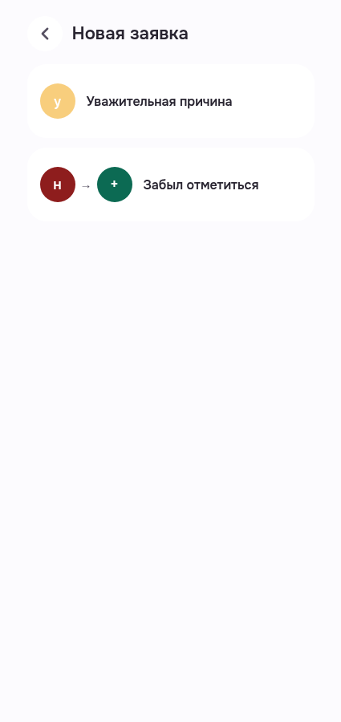
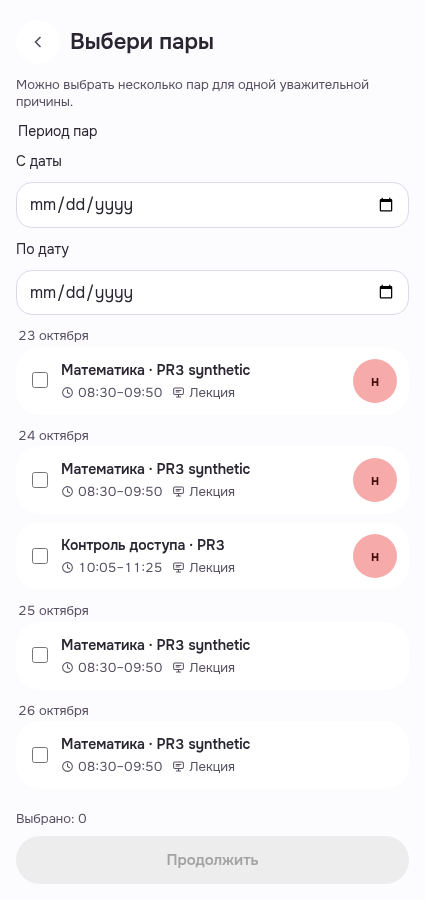
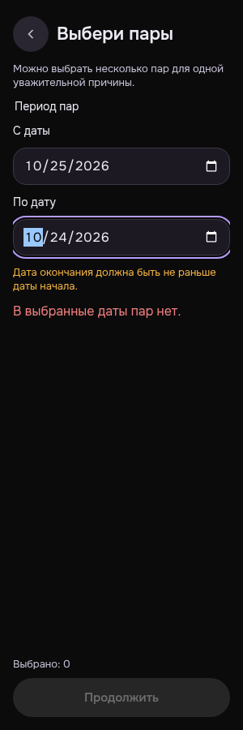
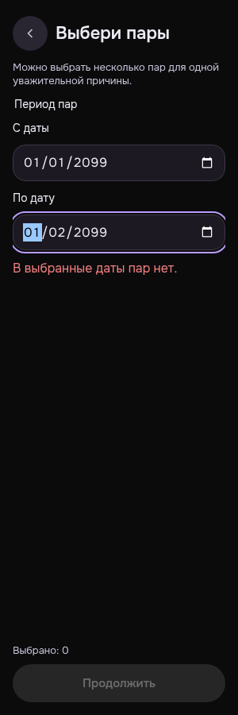
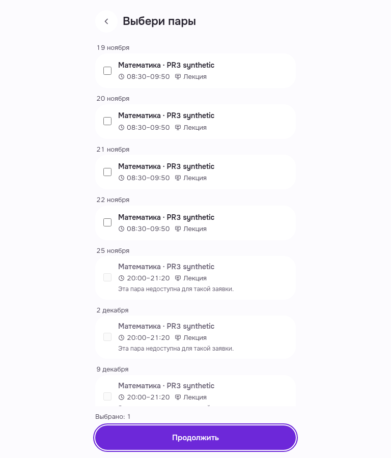
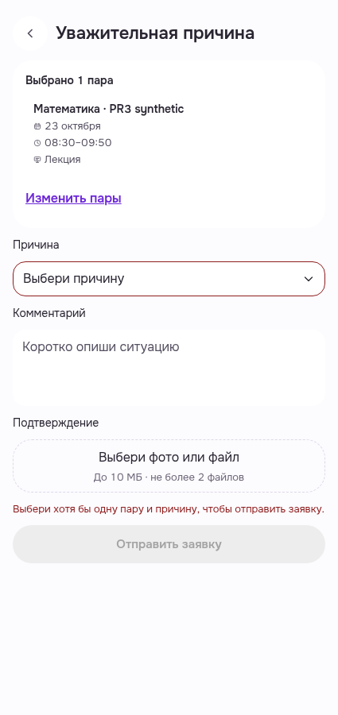

Student: тип заявки → выбор пары → просмотр черновика
Шесть лично просмотренных реальных PWA кадров. MainStudent3/Auth200 и API реальные; только OS media, локальные даты и local checkbox. Cached options: искусственного loading/ответов API нет. Без submit/upload/domain/prefs/rights writes. Technical exactselfDELETE204/samebearer401; browser closed, nativeUIlogout не перепроверялся.
Критерии/ограничения · Manifest · Raw receipt
Новая заявка · реальные варианты · light · 425
Обычный MainStudent3 Auth и реальный GET /requests/options. Оба типа доступны; нажата только «Уважительная причина». Без отправки/смены данных.
Оба варианта/названия помещаются; header/back читаемы.
PWA-MOBILE-REQUESTTYPE__MB-RQ-01-resolved-real-choices__light__425__85c068210
revision 85c068210262b611f6f98d18fb9d7bdd8cecea95
SHA256 1fd0d81674e0754dfe646e539e1386551725cf9e442c4e35322eee3d736cc367

Выбор пар · без выбора · light · 425
Реальные собственные пары, сгруппированные по датам; выбор пуст, «Продолжить» выключена. No fakeAPI/loading.
Даты, названия, время, checkbox и статусы читаемы; footer показывает0/disabled.
PWA-MOBILE-REQUESTLESSONSELECTION__MB-RQ-02-real-lessons-unselected__light__425__85c068210
revision 85c068210262b611f6f98d18fb9d7bdd8cecea95
SHA256 86b4dedffc43717eb3cd22b179118368d2a6e52daac18d5dc26ce601a38fea93

Выбор пар · неверный период · dark · 300
Локально введены даты2026-10-25→2026-10-24: inline validation/aria-alert; продолжение выключено. API-ответы не заменены.
Сообщение про порядок дат и оба поля видны без горизонтального переполнения; также штатный filtered-empty caption.
PWA-MOBILE-REQUESTLESSONSELECTION__MB-RQ-03-local-invalid-date-range__dark__300__85c068210
revision 85c068210262b611f6f98d18fb9d7bdd8cecea95
SHA256 d69f7f58476c9b65904f11d24040ae16635cb0bfdff6e31257554accb91743fd

Выбор пар · пустой фильтр · dark · 300
Локальный валидный период2099-01-01→2099-01-02 фильтрует те же реальные options до пустого списка. Ошибки порядка дат нет; продолжение выключено.
Читаемое empty-состояние; 0 selected/disabled footer. Это пустой local filter, не отсутствие backend-данных.
PWA-MOBILE-REQUESTLESSONSELECTION__MB-RQ-04-real-options-future-filter-empty__dark__300__85c068210
revision 85c068210262b611f6f98d18fb9d7bdd8cecea95
SHA256 4db177d5c8810c73e73ef383718a381b3160b5cea884e7df145e449896ddc604

Выбор пары · keyboard focus · light · 768
Фильтр сброшен, выбран первый доступный собственный checkbox, selected1 и «Продолжить» включена. Keyboard Shift+Tab/Tab вернул focus на Continue.
Видимая focus ring у Continue; длинный локальный список прокручен к footer при keyboard focus, поэтому исходная выбранная строка вне кадра. Disabled поздние options пояснены. Full scroll traversal не проверялся.
PWA-MOBILE-REQUESTLESSONSELECTION__MB-RQ-05-one-local-selection-keyboard-focus__light__768__85c068210
revision 85c068210262b611f6f98d18fb9d7bdd8cecea95
SHA256 e8d3886f42ef9f2eb94a4643f1def5f72dc130b7075b1294d5bd8d6eac178788

Уважительная причина · просмотр черновика · light · 425
Обычная «Продолжить» открыла нормальную форму с выбранной парой23октября08:30–09:50. Причина/комментарий/файлы не заполнены, submit выключен; отправки/upload нет.
Summary выбранной пары, причина, комментарий, file placeholder и disabled-submit читаемы. Normal editable form inspected only; readOnly prop не подменялся.
PWA-MOBILE-EXCUSEREQUEST__MB-RQ-06-selected-lesson-draft-preview-no-submit__light__425__85c068210
revision 85c068210262b611f6f98d18fb9d7bdd8cecea95
SHA256 01b61258496c933a1c51c7df5c195e57e5c6ed69c5866437d3e8633d9055b762
